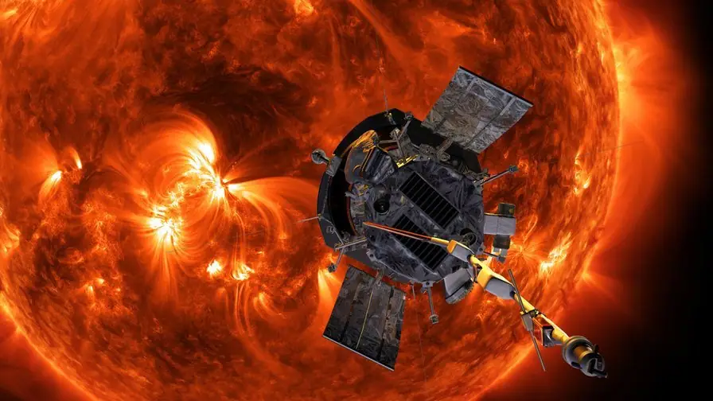
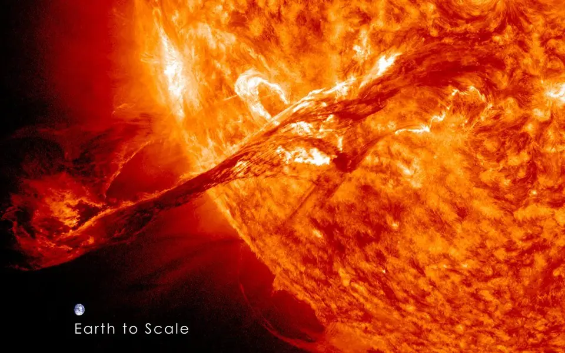
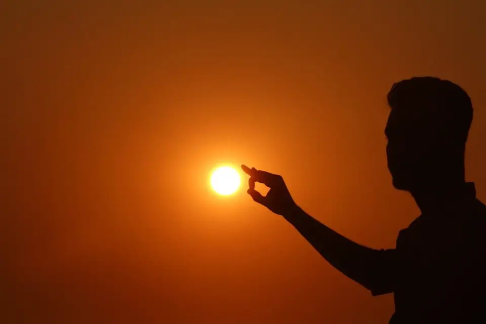
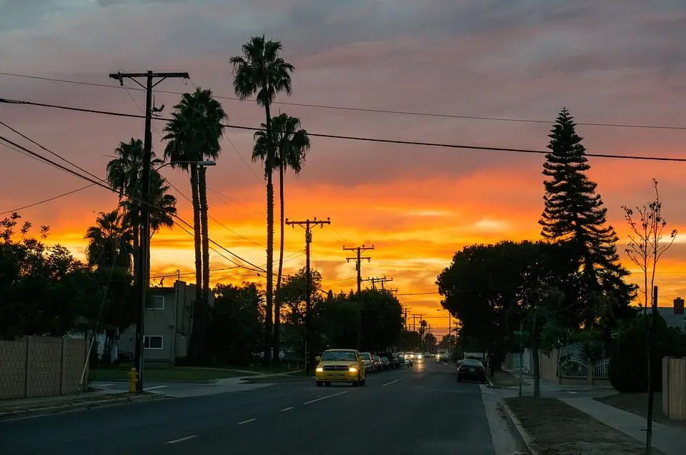

Articles ·
NASA’s Parker Solar Probe is attempting to touch the sun

We have sent probes zooming throughout our local solar system. There have been human landings on the moon, asteroid touchdowns, and planetary flybys aplenty. Voyager 1 is still zooming off into the deep stretch of interstellar space beaming us back information until the mid-2020s. We’ve been to a lot of places in such a relatively short amount of time. But for years many scientists had their eyes set on journeying to the source of what makes it all possible – the sun.
Sometime in August of 2018, launching from our familiar Cape Canaveral, Florida skies we will set out to launch the Parker Solar Probe, which will hitch a ride through the atmosphere and be blasted into space by a United Launch Alliance Delta IV Heavy rocket. The probe, no larger than a car, will be the closest a man-made object has ever gotten to the sun. We will be able to study and see it like we’ve never seen it before.
In a televised press conference from the NASA Kennedy Space Center, Nicky Fox, project scientist from John Hopkins University Applied Physics lab, announced the scientific goals and the technology behind the Parker Solar Probe. With excitement, she declared: “We’ve been studying the Sun for decades, and now we’re finally going to go where the action is.”
The Parker Solar Probe will orbit around the sun within a 4 million mile distance from the surface. It will have to contend with heat and power that no spacecraft has ever seen before. The mission hopes to find out more about solar activity give us a greater ability to forecast space-weather that impacts the Earth.

The engine of our existence
Here’s a look at what the Sun actually is. Our sun is known as a main sequence star, it’s a spherical body that is made up of two gases, hydrogen, and helium. Nuclear fusion is present, which means that two lighter atomic nuclei conjoin together to form a heavier atomic nucleus.
Compared to other stars, the Sun isn’t that big. It’s one of the most common types of stars in the universe – a red dwarf. Though it may not be the biggest type of star in the cosmos, it’s definitely larger than most. Our sun has a complex inner system as it has dynamic magnetism and is an active star. The Sun’s atmosphere is constantly sending out magnetized materials outwards throughout our entire solar system and influences every world it touches. This magnetic and solar energy travels outwards and is what we would call space weather.
The influence of solar activity on Earth and other worlds are collectively known as space weather.
Concerning the goals of sun exploration, Nicky Fox stated:
“The Sun’s energy is always flowing past our world… And even though the solar wind is invisible, we can see it encircling the poles as the aurora, which are beautiful – but reveal the enormous amount of energy and particles that cascade into our atmosphere. We don’t have a strong understanding of the mechanisms that drive that wind toward us, and that’s what we’re heading out to discover.”
The key towards learning more about the effect it has on Earth depends on us getting a more detailed look and investigation into the sun itself.

Reasons for the mission
The Parker Solar Probe is going to have a number of instruments to study the sun both remotely and directly. The data garnered from these instruments should be able to answer a number of questions about our Sun. For years, scientists have been planning for a mission to the sun. It is because of advanced technology like a heat shield, a cooling system, and fault management system that this mission is now possible.
It was in 1958 that physicist Eugene Parker first published his seminal scientific paper theorizing about the existence of solar wind. The probe and mission are named after him, this is also noteworthy because he’s still alive and it’s the first time a NASA mission was named after a living person.
The technology is nothing short of miraculous, as it will certainly pave the way for further investigation into the universe. Andy Driesman, project manager of the Parke Solar Probe said:
“The Thermal Protection System (the heat shield) is one of the spacecraft’s mission-enabling technologies… It allows the spacecraft to operate at about room temperature.”
All of this will allow the spacecraft to do its work without burning up in the intense inferno of the Sun’s corona. Blasting off of the Delta IV heavy, the Parker Solar Probe will be blasted to the sun at around 430,000 miles per hour, making it one of our fastest probes yet!

Timeline of the mission
- Launch: Aug. 11, 2018
- Venus Flyby: Oct. 2, 2018 at 7:45pm EDT (23:45 UTC)
- First Perihelion: Nov. 5, 2018 at 1:33pm EST (18:33 UTC)
Parker Solar Probe will flyby Venus 7 times via gravity assists with 24 orbits around the sun. At its closest approach of 3.83 million miles, it will be within the orbit of Mercury and the closest a spacecraft has ever gone next to the sun. It’s expected to be finished by the mid-2020s.
-
Closest approach: 3.83 million miles
-
Speed ~430,000 miles per hour (~125 miles per second)
-
Orbit period: 88 days
This is a true explorative mission, for example, the probe will be close enough to the sun to watch as solar winds go from subsonic to supersonic. It will also bathe itself in the origin of the highest-energy solar particles emitted from the Sun.
We can expect just as many answers as new questions as we embark on this journey to Sol.
What will we discover?
The probe is going to explore the corona, which holds the answers to many questions about the Sun’s properties and processes. Scientists hope to answer questions about the mystery of accelerated solar winds and different changes in the Sun’s atmosphere. The different instrumentation onboard such as the FIELDS suite will be able to measure electric and magnetic fields around the probe.
WISPR (Wide-Field Imager for Parker Solar Probe) will be an imaging instrument that will be able to take pictures of jets and other ejected materials bursting from the Sun’s corona.
The SWEAP (Solar Wind Electrons Alpha and Protons Investigation) is a set of tools that will be able to measure different properties like velocity, density, and the temperature inside of the solar winds and plasma. Along with that, the ISOIS (Integrated Science Investigation of the Sun) will measure different types of energies emitted from the sun – such as electrons, protons and ions and how they move throughout space.
Not only will we learn more about the origins of our solar system and have actionable insights into how our sun functions, we’ll also now be more knowledgeable about other stars. Thomas Zurbuchen of NASA said that:
“By studying our star, we can learn not only more about the Sun… We can also learn more about all the other stars throughout the galaxy, the universe and even life’s beginnings.”
This is a monumental step in our knowledge of our local neighbors. We’ve come full circle once we make the trek to touch the sun.